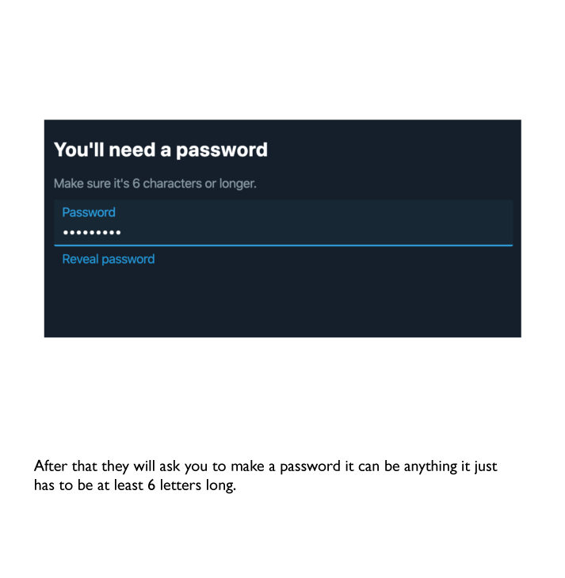
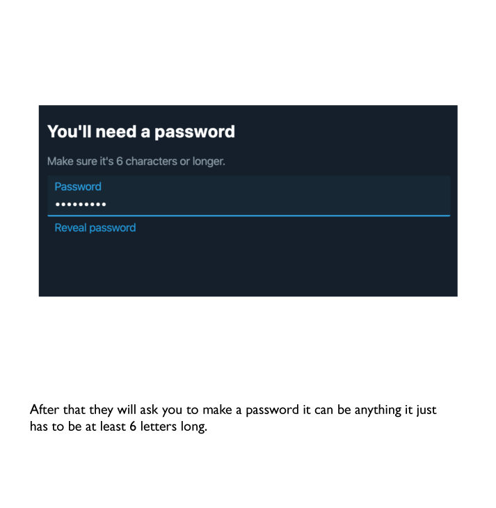

How To Register
 

Teaching and Examples
Twitter is used through making tweets and communicating with others. Each tweet can hold up to 140 characters in length.
This social media is used throughout the world and is used in teaching nowadays.
Twitter can be used in many ways in teaching. Firstly, it can be used to give assignments and homework to students. Everyone can get
notified when you tweet and in the tweet you can post links mention what needs to be done. If students are unsure,
they can reply to the tweet where you can answer it. The students can also share the information or tweet to students who
haven't got twitter.
It can also be used as a research tool for students. They can write in search bar and can be given useful links if they
specify what they need. There is also a news tab where they can get information.
Students can get involved in sharing their ideas and being active with the class. A hashtag for the class can be created which
students can use when they tweet. A record of tweets is kept when you tweet which show the time and date when you created it.
This is useful for example, when students want to go back to information to study or to make sure what they need to complete.
Cautions
Twitter has several things in place to give us control over our accounts. Their full privacy policy is
found online, most easily through your own privacy settings on your account. The main things we
have access over are:
· Who sees your tweets – are your tweets completely public or locked for only each
approved follower?
· If you can be tagged in pictures – if this is ticked as no, then you cannot be attached to
an image, however your name can be mentioned in a comment so this is kind of
ineffective
· Who can send you messages – much like your tweet privacy, can anyone send you a
direct message or is it only your pre-approved followers?
· If you can see sensitive media – if Twitter finds any material a sensitive topic, it gets
blurred and you are warned before proceeding or have the option to back out.
· Block and muting accounts – To block someone means they cannot view specifics
which will be explained further below. You can also mute someone so that they don’t
appear in your timeline but you can still follow them, contact them etc.
A blocked twitter user can pretty much still see everything that you tweet, favourite, retweet, etc.
You, as a blocker, are more effected. The blocked user:
· Is removed from your follower list
· Will not show up in your timeline, whether it’s their own account tweeting or someone
else you follow retweeting them
· Will not be able to reply or @ you
· Will not show on your timeline via retweets, favourites etc.
What is public on Twitter from your account regardless is:
· Your timezone and language
· How old your account is
· When and where you tweet
· Your likes, replies and comment
· Your address book if you upload it
· Your twitter handle (username)
· Your picture and header
· Your name of which you can choose yourself
You can control some of this through your own device by turning your locations off. You can also
delete your previous locations, address book and any other optional data you upload. You are
required to give an email to log in, but a phone number is not required unless you wish to use it or
you use two-step authentication for logging in. Twitter also use cookies for their ads but you can
fine tune your ads or change it completely.
You can report a user or a tweet. This report falls under specific categories and then Twitter have
a team set up so that they will determine if it’s true and to which punishment the user will get,
varying from the user having to delete the tweet, not being able to tweet just read their timeline, or
having to delete their account.
There are also ‘verified users’ for certain users. Initially, this was done based on how many
followers someone had but has changed over the years. There’s now a process. Firstly, you must
fill out a form. Then you need:
· Verified phone number and email – for the email, it is said for example if it’s a business
to use an email related to the business
· A bio, header and icon
· Your birthday
· A website linked in the correct place (not your bio)
· Your tweets public
There are tips and tricks online but really it just comes down to the verification team. This process
is still new and not available everywhere.